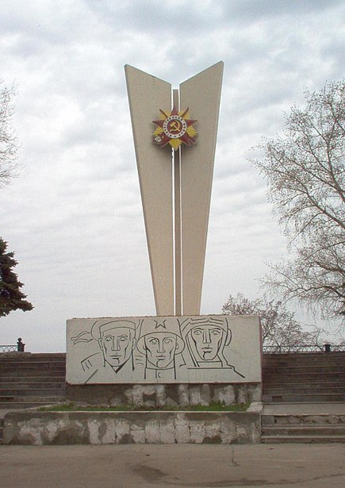

Э́нгельс (до 1914 года — Покро́вская Слобода́, до 1931 года — Покро́вск) — город в Саратовской области России, второй по числу жителей город области. Административный центр Энгельсского муниципального района и входящего в него муниципального образования город Энгельс со статусом городского поселения. Энгельс расположен на левом берегу Волгоградского водохранилища при впадении в него реки Саратовки, напротив Саратова [⇨]. Основан в 1747 году чумаками из Полтавской и Харьковской губерний. Флаг города — сине-бело-красно-чёрно-жёлтый (жёлтый и чёрный цвета на флаге — от флага Германии (в память Автономной Республики Немцев Поволжья), а белый, синий и красный — от флага России). На гербе изображён вол (скот, на котором везли соль чумаки). С 1922 по 1941 годы — столица Автономной Республики Немцев Поволжья[⇨]. Входит в состав Саратовской агломерации. Предпринимались попытки выдвинуть предложения по объединению Энгельса и Саратова в единый город-миллионер. Покровская слобода основана в 1747 году на левом берегу реки Волги украинскими поселенцами, напротив города Саратова. Прежде на этой территории были калмыцкие кочевья и ставка хана Аюки. Ещё в 1617—1674 годах в черте современного Энгельса находился и сам Саратов, перенесённый позже на другой берег Волги. И именно здесь состоялась первая встреча Петра Первого с калмыцким ханом Аюкой. Закладка слободы в 1747 году связана с указом императрицы Елизаветы о начале добычи соли на озере Эльтон и закладки для этих целей ряда опорных баз на Волге (ещё в 1990-х годах XX века и в первые года XXI века можно было услышать, как проспект Строителей и Ершовский тракт называют Эльтонским трактом, а переезд на пересечении проспекта Строителей и Полтавской улицы — «Эльтонка»). 16 и 18 августа 1747 года под руководством подполковника Н. Ф. Чемодурова состоялась закладка первых соляных магазинов. В связи с тем, что лошади не выдерживали тяжёлого труда в голой степи, для доставки соли в Заволжье были приглашёны с волами казацкие чумаки (возчики), которые и стали первыми жителями слободы. За несколько лет сюда приехало несколько сотен семей. Управление слободой осуществлялось атаманами. В 1851 году Покровская слобода в составе Новоузенского уезда была передана из состава Саратовской губернии во вновь образованную Самарскую губернию.